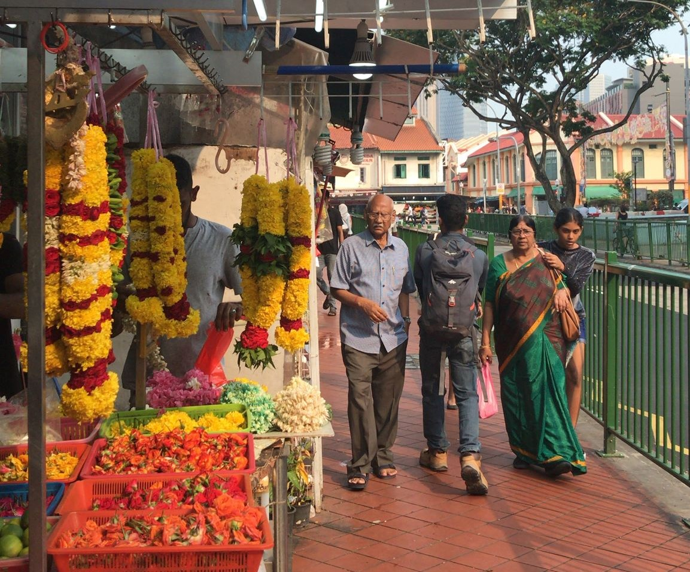

VELKOMMEN TIL SINGAPORE
Hvert år tager 3.t til bystaten Singapore.
Singapore er desinationsland for studieretningen
bioteknologi A. Dette site vil yde information angående dit desinationsland
Singapore, så du kan blive klar til din studierejse i 3.g.
I Singapore vil du møde et velfungerende multikulturelt samfund.
Dette afspejles især ved de forskellige kvartere, som byen har.
Vi var så heldige at bo i det kinesiske kvarter, Chinatown.


Udover Chinatown findes området Little India.
I Little India oplevede vi, at der for det første
færdedes flest mennesker af indisk afstamning, og tilmed
var området udsmykket af indisk karakter.
På murvæggene var hellige køer malet, og gaden var
præget af eksotiske frugter hos de lokale købmænd.
I det indiske område kan du købe alt fra henna til indiske sarier
og krydderier i alverdens farver. På gadehjørnerne og hos
købmændene står unge mænd og kvinder og binder skriggule og mørkrøde
blomster til kranse. Området er meget smukt, og du kan tilmed besøge hinduistiske templer -
husk blot at iføre dig de farvestrålende tørklæder, som ligger foran, templet for at respektere religionen!
Det er nemlig essentielt at dække skuldrer og bryst til, når de besøger et hinduistisk tempel.
Ovenstående billede er fra en kinesisk købmand,
vis facede var beklædt med utallige kinesiske lanterner.
Nedenstående link sender dig videre til den en fuldstænding
essentiel pakkeliste. UDEN den kan du ikke tage afsted ordentligt
forberedt! Skynd dig at tjekke den ud!
PAKKELISTE